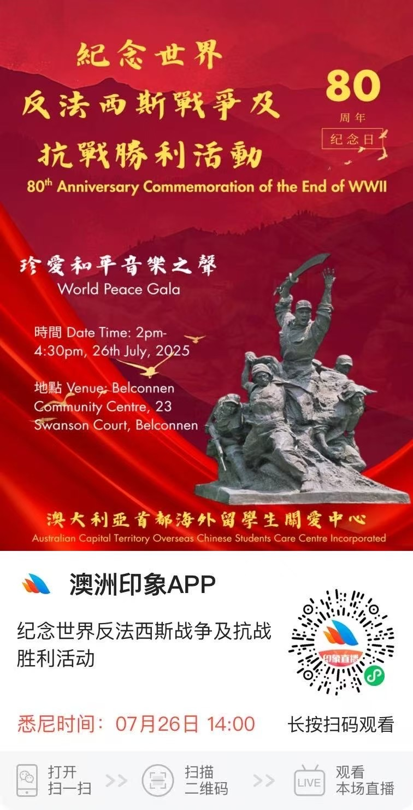
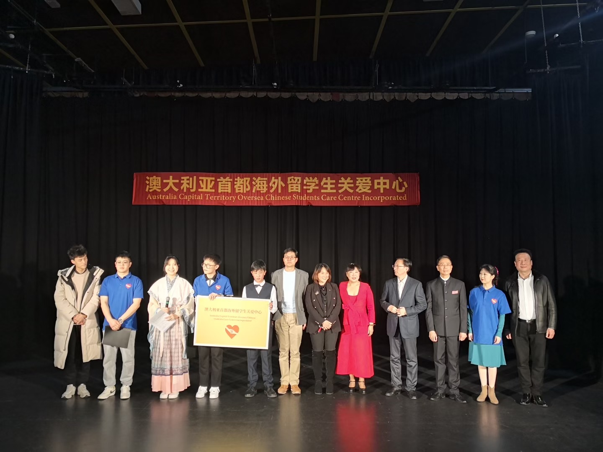
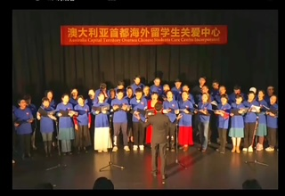
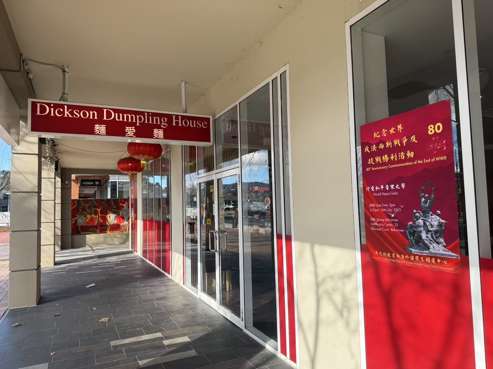
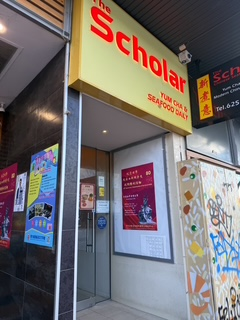
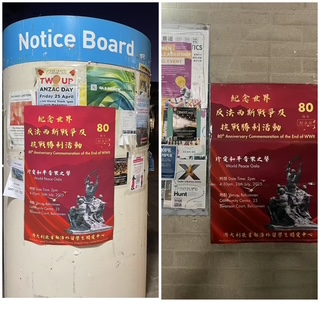
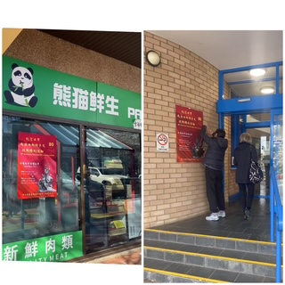

庆祝中澳建交五十周年
澳大利亚首都海外留学生关爱中心—
纪念世界反法西斯战争暨抗战胜利80周年的珍爱和平音乐之声活动、圆满的落下帷幕。到会人员小记150多人、大家站在观众席依然兴趣盎然，且在线观看过万人，今天回放超万。
感谢旅澳大中小留学生、华人华侨的支持与配合。格格谢谢大家。有大家的陪伴、澳大利亚首都海外留学生关爱中心会一直守护下去，让旅澳留学的学子们出国在外学习一样有家的味道。孩子们加油吧!






